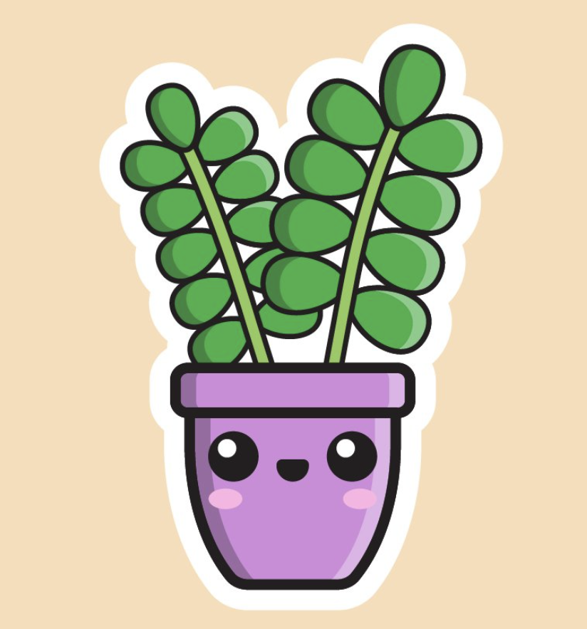

Zakup roślin grozi poważnym uzależnieniem. Zastanów się, czy napewno chcesz kupić
swojego pierwszego badylka - bo na jednym się nie skończy!

Home jungle
Miał*ś wyjść tylko po bułki a wrócił*ś z nową roślinką?
Home jungle to baza wiedzy o pielęgnacji roślin domowych
tych popularnych, a także tych kolekcjonerskich. Ta strona
pomoże Ci stworzyć nowy dom pełen miłości dla Twoich roślin!